Prendre les commandes sur un téléphone (iPhone ou Android) relié à la caisse OLPOS par le Wi-Fi du restaurant.
OLPOS 3.81 – version dérivée d'uniCenta oPOS (licence GNU GPL v3) Document établi le 11 novembre 2026 sur l'installation de test
1. Ce qui existe réellement
Aucune application à installer. Le téléphone utilise une page web servie par la caisse OLPOS, dans Safari (iPhone) ou Chrome (Android).
Cette page est fournie par l'API intégrée au logiciel de caisse : elle fonctionne uniquement si la caisse OLPOS est ouverte sur le PC.
Fonctions disponibles sur le téléphone : connexion du serveur, plan de salle, prise et modification de commande (quantités, notes cuisine), envoi en cuisine, addition provisoire, numéro de commande.
L'encaissement se fait à la caisse : le ticket client définitif est imprimé par la caisse au moment du paiement.
À savoir : ce guide a été réalisé sur la caisse de test. Les tickets ont été vérifiés avec l'imprimante « écran » de la caisse : l'impression sur une vraie imprimante papier reste à tester quand le matériel sera installé.
2. Avant de commencer
Le PC de la caisse est allumé et ne se met pas en veille pendant le service.
La caisse OLPOS est ouverte (l'API démarre et s'arrête avec elle).
Le téléphone et le PC sont sur le même réseau Wi-Fi du restaurant (pas le Wi-Fi « invité », pas les données mobiles 4G/5G).
Le serveur a un compte autorisé : un mot de passe et un rôle avec l'accès téléphone (voir § 7).
3. Lancer OLPOS et son API sur Windows
Installation de test (celle de ce guide) : dans le dossier C:\Users\user\unicenta, double-cliquez sur start-test.bat. La fenêtre « OLPOS - 3.81 » s'ouvre :
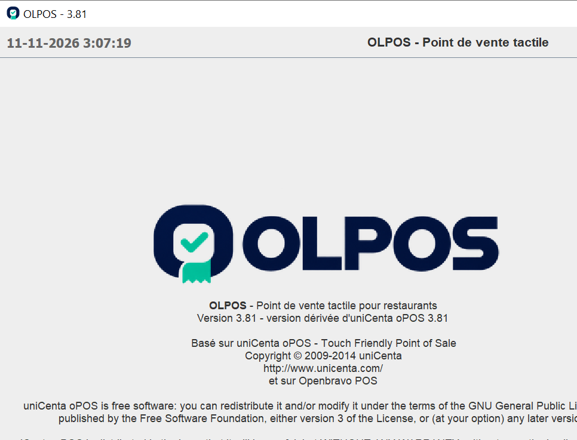
Capture réelle : caisse OLPOS de test au démarrage (écran de connexion).
L'API est activée par le fichier de configuration de la caisse. Valeurs vérifiées le 11/11/2026 sur la caisse de test (test-env\unicentaopos-test.properties) :
Réglage
Valeur
Signification
api.enabled
true
l'API et la page téléphone démarrent avec la caisse
api.port
8095
port à utiliser dans l'adresse
api.bind
0.0.0.0
accessible depuis le réseau local (pas seulement depuis le PC)
machine.ticketsbag
restaurant
mode plan de salle (obligatoire pour les commandes par table)
Pour une installation réelle, ces lignes doivent figurer dans la configuration de la caisse utilisée (par défaut %USERPROFILE%\unicentaopos.properties), puis la caisse doit être redémarrée.
4. Trouver l'adresse IPv4 du PC
Sur le PC, appuyez sur Windows + R, tapez cmd puis Entrée.
Dans la fenêtre noire, tapez ipconfig puis Entrée.
Cherchez la carte Wi-Fi (« Wireless LAN adapter Wi-Fi » ou « Carte réseau sans fil Wi-Fi ») puis la ligne « IPv4 Address » (« Adresse IPv4 » sur un Windows en français).
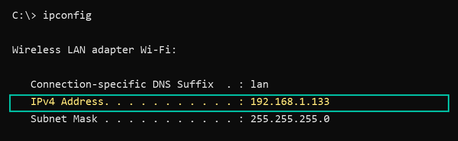
Extrait réel de ipconfig sur ce PC (carte Wi-Fi, lignes IPv4 seulement).
Adresse relevée et vérifiée le 11/11/2026 : 192.168.1.133, port 8095. Cette adresse peut changer (redémarrage de la box, autre réseau). Si le téléphone ne trouve plus la caisse, refaites ipconfig. Pour la garder fixe, demandez une « réservation d'adresse DHCP » pour le PC dans la box Internet.
5. Vérifier la connexion depuis le téléphone (test technique)
Dans le navigateur du téléphone, tapez l'adresse :
http://192.168.1.133:8095/api/v1/health
Réponse réelle de /health
Si le texte commence par {"status":"ok","app":"OLPOS", le téléphone atteint bien la caisse.
Test technique uniquement :/health vérifie seulement que l'API répond. Il ne vérifie ni les comptes, ni les imprimantes, ni les commandes. Les serveurs n'ont pas besoin de cette adresse au quotidien.
6. Ouvrir la page de commande
Adresse à utiliser par les serveurs :
http://192.168.1.133:8095/
iPhone : Safari > bouton Partager > « Sur l'écran d'accueil » : une icône OLPOS apparaît comme une application.
Android : Chrome > menu ⋮ > « Ajouter à l'écran d'accueil ».
L'adresse se saisit uniquement dans la barre d'adresse du navigateur : il n'existe pas d'écran de réglage du serveur dans la page.
7. Se connecter avec un compte autorisé
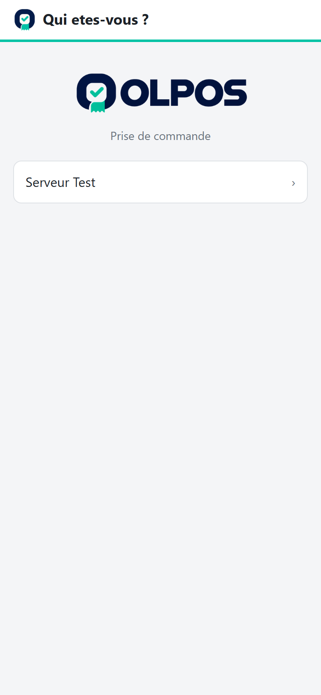
Choix du serveur
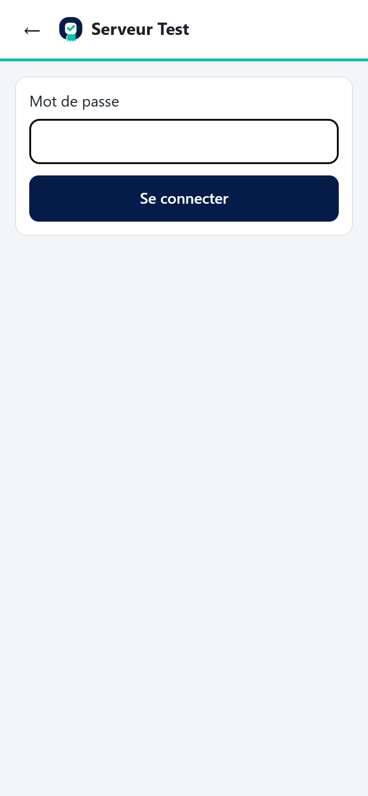
Saisie du mot de passe
Touchez votre nom.
Saisissez votre mot de passe (celui de la caisse, communiqué par le responsable) puis « Se connecter ».
Votre nom n'apparaît pas ? À la caisse, en Administrator :
Administration > Maintenance > Users : le compte doit avoir un mot de passe (bouton « Pass… ») et « Visible » coché ;
Administration > Maintenance > Roles : son rôle doit avoir la case « Phone access (mobile.Access) » cochée.
Après 5 mots de passe faux, le compte est bloqué 60 secondes.
8. Choisir une table, créer ou modifier une commande
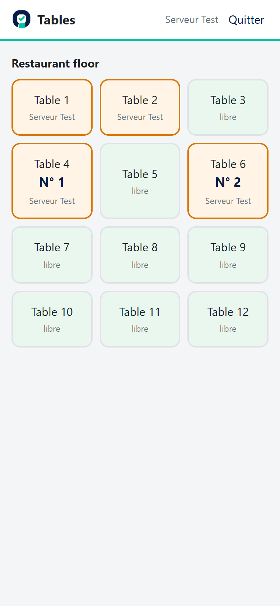
Plan de salle (tables occupées en orange, avec leur numéro de commande)
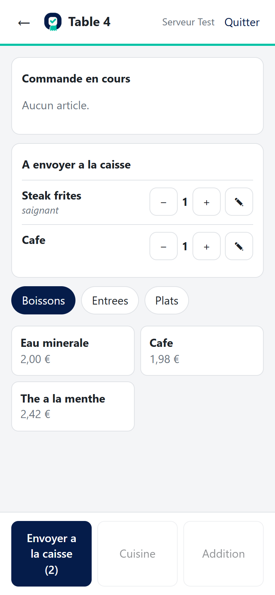
Ajout d'articles et d'une note
Touchez une table.
Choisissez une catégorie puis touchez les produits : ils s'ajoutent dans « À envoyer à la caisse ».
Boutons − / + pour la quantité, ✎ pour une note cuisine (« saignant », « sans sel »…).
Touchez « Envoyer à la caisse » : la commande est enregistrée et reçoit son numéro.
Pour modifier une ligne déjà enregistrée : bouton ✎ sur la ligne (quantité, note ou suppression).
Les prix et taxes sont calculés par la caisse. Si la table est ouverte au même moment sur l'écran de la caisse, le téléphone l'indique et n'écrase rien.
9. Envoyer en cuisine et imprimer l'addition
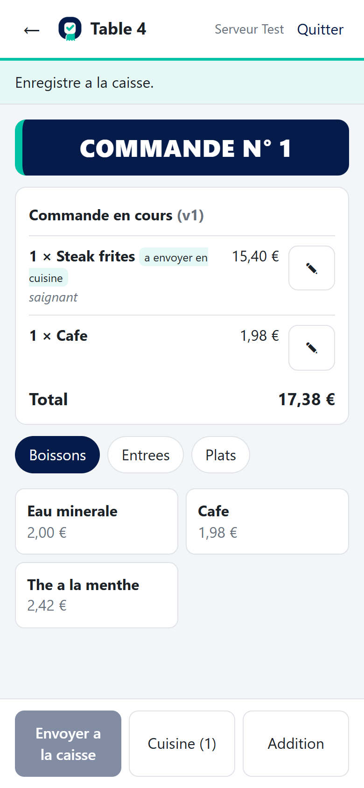
Commande enregistrée : « COMMANDE N° 1 »
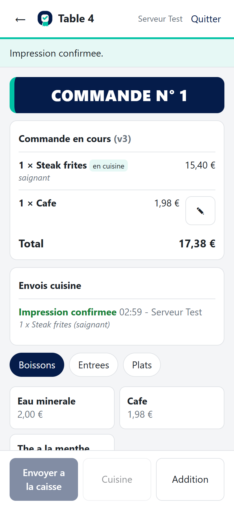
Après « Cuisine »
« Cuisine (n) » : imprime en cuisine les nouveaux plats seulement (jamais deux fois). Statuts : « Impression confirmée », « Envoyé à l'imprimante (non confirmé) », « À vérifier » (le serveur choisit alors « Le bon est sorti » ou « Réimprimer »).
« Addition » : imprime une addition provisoire (détail et total, sans encaisser).
Coupure Wi-Fi : la page garde la demande et propose « Vérifier » ; une même demande n'est jamais imprimée deux fois.
Le paiement et le ticket client définitif se font à la caisse.
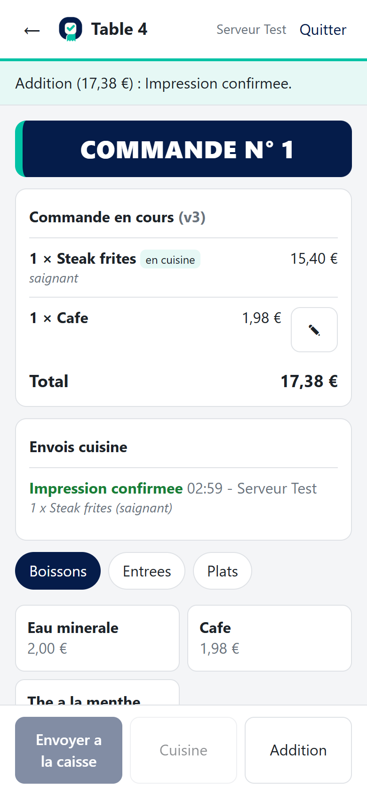
Après « Addition »
10. Le numéro de commande commun
Chaque commande reçoit un numéro visible, affiché en grand : COMMANDE N° 42
sur le téléphone (en haut de la commande et sur la table du plan de salle) et à la caisse (à côté du nom de la commande) ;
sur le ticket client, l'addition et le bon cuisine : exactement le même numéro pour une même commande ;
sur un bon cuisine complémentaire : mention « AJOUT » et le numéro initial ;
sur une réimpression : mention « DUPLICATA » et le numéro initial.
Le numéro est attribué à la première sauvegarde de la commande (avant l'envoi en cuisine et avant le paiement) et ne change plus ensuite (modifications, ajouts, paiement, réimpressions).
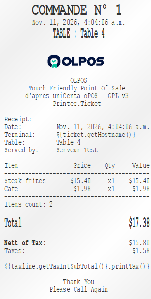
Ticket client
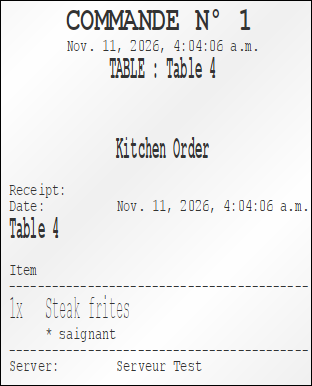
Bon cuisine
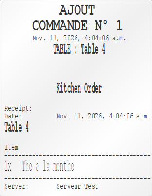
Bon complémentaire « AJOUT »
Illustration : rendu réel du moteur d'impression d'OLPOS (imprimante « écran ») pour la commande de test N° 1 (Table 4 : steak frites saignant + café). L'en-tête du ticket client (« OLPOS / Point de vente tactile / Printer.Ticket ») et la ligne de taxe non remplie proviennent du modèle d'exemple, à personnaliser avec le nom et l'adresse du restaurant. Le rendu sur papier dépendra de l'imprimante : à tester.
La séquence 1 à 100
1 → 2 → 3 → … → 98 → 99 → 100 → 1 → 2 → 3 …
La première commande reçoit le 1, puis 2, 3… jusqu'à 100, et la suivante repart à 1.
Le compteur n'est pas remis à 1 chaque jour ni au redémarrage de la caisse : seul le passage après 100 ramène à 1.
Le compteur est commun à la caisse et à tous les téléphones : deux commandes prises en même temps reçoivent deux numéros différents qui se suivent.
Comme les numéros reviennent après 100, les tickets indiquent aussi la date, l'heure et la table (ou « A EMPORTER »).
Ce numéro est distinct du numéro de ticket de caisse (comptable), qui ne change pas.
11. Dépannage
Problème
Que faire
Mauvais réseau Wi-Fi
Le téléphone doit être sur le même Wi-Fi que le PC. Désactivez les données mobiles pour tester. Vérifiez le nom du réseau dans les réglages Wi-Fi du téléphone.
Mauvaise adresse IP
Refaites ipconfig sur le PC (§ 4) et corrigez l'adresse dans le navigateur. N'oubliez pas :8095 et http:// (pas https).
Caisse ou API arrêtée
La caisse OLPOS doit être ouverte sur le PC (fenêtre « OLPOS - 3.81 »). Relancez-la (start-test.bat en test). Vérifiez api.enabled=true dans la configuration. Test sur le PC lui-même : http://127.0.0.1:8095/api/v1/health.
Pare-feu Windows
Si la page s'ouvre sur le PC mais pas sur le téléphone : le pare-feu bloque. Ne désactivez pas le pare-feu. Passez le Wi-Fi en profil « Privé » (Paramètres > Réseau et Internet > Wi-Fi > votre réseau) puis autorisez seulement le port 8095 sur les réseaux privés (invite de commandes administrateur) : netsh advfirewall firewall add rule name="OLPOS API mobile" dir=in action=allow protocol=TCP localport=8095 profile=private Constat sur ce PC (11/11/2026) : le Wi-Fi est en profil « Public » et une règle autorise Java en entier sur ce profil ; il est préférable de la remplacer par la règle limitée ci-dessus.
Service limité à localhost
Si api.bind vaut 127.0.0.1, seule la caisse elle-même peut se connecter. Mettez api.bind=0.0.0.0 (ou l'adresse IPv4 du PC) puis redémarrez la caisse. Vérification : netstat -an | find "8095" doit montrer 0.0.0.0:8095 (ou [::]:8095) en écoute.
Réseau invité / isolation
Les Wi-Fi « invité » (et certains Wi-Fi d'entreprise) empêchent les appareils de communiquer entre eux. Connectez le téléphone et le PC au Wi-Fi principal du restaurant, ou désactivez l'« isolation des clients » pour ce réseau dans la box (réseau du personnel uniquement).
« Table ouverte à la caisse »
Normal : la table est affichée sur l'écran de la caisse. Revenez au plan de salle à la caisse, puis réessayez sur le téléphone.
Sécurité : n'ouvrez jamais l'API sur Internet (pas de redirection de port sur la box). Elle est prévue pour le réseau local du restaurant uniquement, sans chiffrement : utilisez un Wi-Fi réservé au personnel, protégé par mot de passe.
12. Ce qui a été vérifié et ce qui reste à tester
Vérifié (11/11/2026, installation de test)
Reste à tester
API et page joignables par le Wi-Fi à 192.168.1.133:8095 ;
parcours complet dans un navigateur au format téléphone (connexion, table, commande, cuisine, addition) ;
numérotation 1, 2, 3 puis 99, 100, 1, 2 ; conservation après redémarrage ; 14 commandes simultanées ;
même numéro sur ticket client, bon cuisine, AJOUT et DUPLICATA (rendu réel « écran ») ;
page sur un vrai iPhone (étapes précédentes : connexion, commandes, cuisine).
numéro de commande sur un vrai téléphone ;
impression papier sur les imprimantes du restaurant (ticket, cuisine, addition) ;